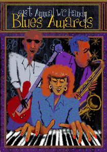
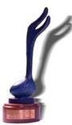

ﺛـﻩﹽﻣﻥﻝ ﻡﹽﻣﻌﻭﻭ ﻭﻌﻣﻎﻭ ﺁ.ﺗ.ﺻﻱﻎﻟﻭ 2000ﻛ.
- Blues Entertainer of the Year - B.B. King
- Blues Band of the Year - Rod Piazza and The Mighty Flyers
- Blues Album of the Year - Albert King/Stevie Ray Vaughan - "In Session"
- Soul/Blues - Female Artist of the Year - Etta James
- Soul/Blues - Male Artist of the Year - Wilson Pickett
- Blues Song of the Year - "Change in My Pocket" - Sam Myers, Anson Funderburgh, Renee Funderburgh, J.P. Whitefield
- Contemporary Blues - Male Artist of the Year - Keb' Mo'
- Contemporary Blues - Female Artist of the Year - Susan Tedeschi
- Soul/Blues Album of the Year - Wilson Pickett
- Contemporary Blues Album of the Year - Albert King/Stevie Ray Vaughan
- Blues Instumentalist - Other - Clarence Gatemouth Brown
- Blues Instumentalist - Drums - Chris Layton
- Blues Instumentalist - Bass - Willie Kent
- Blues Instumentalist - Keyboards - Pinetop Perkins
- Blues Instumentalist - Harmonica - Charlie Musselwhite
- Blues Instumentalist - Guitar - Duke Robillard
- Best New Blues Artist - Big Bill Morganfield
- Comeback Blues Album of the Year - Wilson Pickett - "It's Harder Now"
- Accoustic Blues Album of the Year- Paul Rishell and Annie Raines - "Moving to the Country"
- Acoustic Blues - Artist of the Year - Keb' Mo'
- Traditional Blues Album of the Year - Muddy Waters - "The Lost Tapes of Muddy Waters"
- Traditional Blues - Male Artist of the Year - R.L. Burnside
- Traditional Blues - Female Artist of the Year - Koko Taylor
- Reissue Blues Album of the Year - Hound Dog Taylor-Deluxe Addition - Bruce Iglauer (Alligator Records)

ﺣﻍﻌﻭﻎـﻎﻥﻝ ﻡﹽﻣﻌﻭﻭ ﻭﻌﻣﻎﻭ ﺁ.ﺗ.ﺻﻱﻎﻟﻭ 2000ﻛ.
Blues Entertainer of the Year
- R. L. Burnside
- Shemekia Copeland
- Anson Funderburgh with Sam Myers
- B. B. King
- Rod Piazza Alvin
- Bobby Rush
Blues Band of the Year
- Johnnie Bassett and the Blues Insurgents
- Anson Funderburgh and the Rockets with Sam Myers
- The Duke Robillard Band
- Rod Piazza & The Mighty Flyers
- Joe Louis Walker and the Bosstalkers
Contemporary Blues Male Artist of the Year
- Bernard Allison
- Johnnie Bassett
- Robert Cray
- Larry Garner
- Kebφ Moφ
- Lilφ Ed Williams
Contemporary Blues Female Artist of the Year
- Marcia Ball
- Deborah Coleman
- Shemekia Copeland
- Debbie Davies
- Susan Tedeschi
Soul/Blues Male Artist of the Year
- Bobby Blue Bland
- Mighty Sam McClain
- Little Milton
- Wilson Pickett
- Bobby Rush
Soul Blues Female Artist of the Year
- Ruth Brown
- Etta James
- Denise LaSalle
- Trudy Lynn
- Irma Thomas
Traditional Blues Male Artist of the Year
- R. L. Burnside
- David Honeyboy Edwards
- Frank Frost
- Alvin Youngblood Hart
- Louisiana Red
- Snooky Pryor
Traditional Blues Female Artist of the Year
- Rory Block
- Algia Mae Hinton
- Odetta
- Ann Rabson
- Annie Raines
- Koko Taylor
Acoustic Blues Artist of the Year
- Cephas and Wiggins
- David "Honeyboy" Edwards
- Alvin Youngblood Hart
- John Jackson
- Keb' Mo'
Best New Blues Artist
- Ronnie Baker Brooks
- Michael Burks
- Big Bill Morganfield
- Kid Ramos
- Mighty Mo Rodgers
Blues Instrumentalist - Guitar
- Deborah Coleman
- Anson Funderburgh
- Big Jack Johnson
- Duke Robillard
- Kid Ramos
- Carl Weathersby
- Joe Louis Walker
Blues Instrumentalist - Harmonica
- Carey Bell
- Frank Frost
- Charlie Musselwhite
- Rod Piazza
- Snooky Pryor
Blues Instrumentalist-Keyboards
- Marcia Ball
- Dr. John
- Johnnie Johnson
- David Maxwell
- Pinetop Perkins
- Honey Piazza
Blues Instrumentalist - Bass
- Aron Burton
- Johnny Gayden
- Calvin Jones
- Willie Kent
- Bill Stuve
Blues Instrumentalist - Drums
- Ray Allison
- Sam Carr
- Willie Smith
- Sam Lay
- Chris Layton
Blues Instrumentalist - Other
- Howard Armstrong (Violin)
- Clarence Gatemouth Brown (Fiddle)
- Memphis Horns (Horn Section)
- Mark "Kaz" Kazanoff (Saxophone)
- Sonny Rhodes (Steel Guitar)
- Roomful Of Blues Horn Section
- Othar Turner (Fife)
Blues Album of the Year
- Luther Allison, Live in Chicago
- Lonnie Brooks/Long John Hunter/Phillip Walker, Lone Star Shootout
- Jimmy Johnson, Every Road Ends Somewhere
- Albert King/Stevie Ray Vaughan, In Session
- Louisiana Red, Millennium Blues
- Duke Robillard, New Blues For the Modern Man
- Joe Louis Walker, Silvertone Blues
Contemporary Blues Album of the Year
- Luther Allison, Live in Chicago
- Brooks/Hunter/Walker, Lone Star Shootout
- Albert King/Stevie Ray Vaughn, In Session
- Charlie Musselwhite, Continental Drifter
- Joe Louis Walker, Silvertone Blues
Soul/Blues Album of the Year
- Bobby Blue Bland, Memphis Monday Morning
- Ruth Brown, A Good Day for the Blues
- Syl Johnson, Talkin Bout Chicago
- Little Milton, Welcome to Little Milton
- Wilson Pickett, Itφs Harder Now
Traditional Blues Album of the Year
- Cephas and Wiggins, Homemade
- Louisiana Red, Millennium Blues
- Jimmy ±T99½ Nelson, Rockinφ and Shoutinφ the Blues
- Paul Rishell and Annie Raines, Moving to the Country
- Muddy Waters, The Lost Tapes of Muddy Waters
Comeback Album of the Year
- John Jackson, Front Porch Blues
- Lazy Lester, All Over You
- Jimmy ±T99½ Nelson, Rockinφ and Shoutinφ the Blues
- Odetta, Blues Everywhere I Go
- Wilson Pickett, Itφs Harder Now
Acoustic Blues Album of the Year
- Etta Baker, Railroad Bill
- Eric Bibb, Spirit and the Blues
- Cephas and Wiggins, Homemade
- John Jackson, Front Porch Blues
- Furry Lewis, Blues Magician
- Paul Rishell and Annie Raines, Moving to the Country
Re-Issue Album of the Year
- Bullseye Blues: Clarence Gatemouth Brown, Okie Dokie Stomp
- Blind Pig Records: Pee Wee Crayton, Early Hour Blues
- MCA Records: Earl Hooker, Simply the Best - The Earl Hooker Collection
- Alligator Records: Hound Dog Taylor, Deluxe Edition
- Evidence Records: Various, Living Country Blues, an Anthology